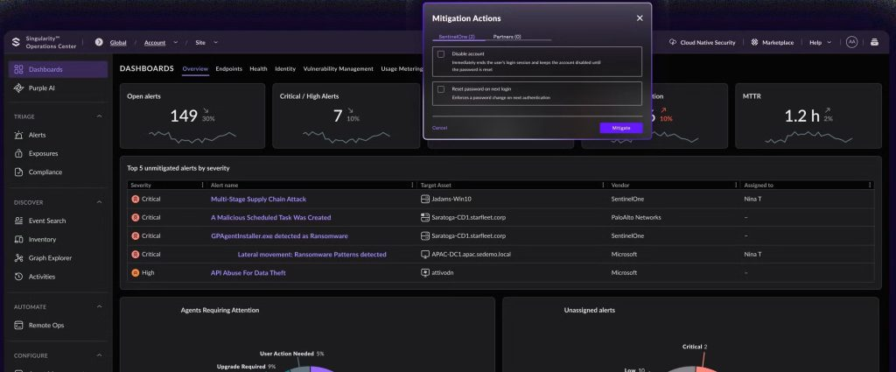

Surveiller l'activité du système d'information
Superviser • Détecter • Analyser • Réagir
Surveiller l'activité du système d'information
Dans le cadre de mon alternance, j’ai utilisé la solution SentinelOne afin de participer à la surveillance de la sécurité des postes et des équipements présents dans le système d'information de l’entreprise.
Cet outil permet de centraliser les informations de sécurité, de détecter des comportements suspects et de faire remonter des alertes lorsqu’une activité inhabituelle est détectée. J’ai ainsi pu découvrir concrètement le fonctionnement d’un outil utilisé pour surveiller et protéger un environnement informatique professionnel.
Surveillance avec SentinelOne
Cet espace peut présenter une capture d’écran de l’interface SentinelOne montrant les alertes, les machines supervisées ou les événements de sécurité détectés.

Exemple de surveillance et d'analyse des événements de sécurité
CE QUE J'AI FAIT
Pendant mon alternance, j’ai utilisé SentinelOne pour consulter les informations de sécurité remontées par les différents postes protégés.
J’ai appris à consulter les alertes, à identifier les machines concernées et à analyser les événements afin de comprendre l’origine d’un comportement considéré comme suspect.
POURQUOI
La surveillance du système d'information permet de détecter rapidement une activité inhabituelle ou une menace potentielle. Cela permet d’intervenir avant qu’un incident de sécurité n’ait des conséquences importantes sur l’entreprise.
L’objectif est donc d’avoir une visibilité sur l’état de sécurité des équipements et de pouvoir réagir rapidement lorsqu’une alerte importante apparaît.
COMMENT
SentinelOne centralise les événements de sécurité remontés par les agents installés sur les postes. Depuis l’interface, je pouvais consulter les alertes et les informations associées à une machine ou à un événement.
Je pouvais notamment regarder le type de détection, la machine concernée et les éléments permettant de comprendre pourquoi l'activité avait été considérée comme suspecte.
L'analyse des alertes
Lorsqu’une alerte apparaissait, il était important de ne pas simplement la considérer comme une attaque. Il fallait d’abord analyser les informations disponibles afin de comprendre ce qui s’était réellement produit.
Cette analyse permet notamment de différencier une activité légitime d’un comportement réellement suspect et d’éviter de multiplier les faux positifs.
DIFFICULTÉS
La principale difficulté a été de comprendre la quantité d’informations remontées par l’outil. Une alerte peut contenir de nombreux éléments techniques qu’il faut apprendre à interpréter.
Il fallait également prendre le temps de comprendre le contexte de chaque événement afin de ne pas réagir trop rapidement à une alerte qui pouvait finalement correspondre à une activité normale d’un utilisateur.
CE QUE J'EN AI APPRIS
Cette expérience m’a permis de comprendre l’importance de la supervision dans la cybersécurité. Une infrastructure ne peut pas être considérée comme sécurisée uniquement parce que des protections sont installées.
Il faut également surveiller les événements, analyser les alertes et être capable d’identifier rapidement les comportements anormaux.
CE QUE JE FERAIS AUTREMENT
Avec davantage d’expérience, je chercherais à mieux automatiser le traitement des alertes afin de faciliter le travail quotidien des équipes techniques.
Je mettrais notamment en place des règles permettant de prioriser automatiquement les alertes les plus importantes et de transmettre les informations nécessaires aux personnes chargées de la sécurité.
Ce que je retiens de cette compétence
L’utilisation de SentinelOne pendant mon alternance m’a permis de découvrir concrètement la surveillance d’un système d'information dans un environnement professionnel.
J’ai appris à consulter des alertes, à analyser des événements de sécurité et à comprendre qu’une bonne supervision permet de détecter plus rapidement les problèmes et les menaces.
Cette expérience m’a également permis de développer mon regard sur la cybersécurité : protéger une infrastructure ne consiste pas uniquement à installer des solutions de sécurité, mais aussi à surveiller leur environnement et à savoir réagir lorsqu’un événement inhabituel est détecté.